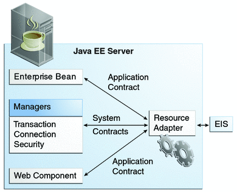

Resource Adapters and Contracts
A resource adapter is a Java EE component that implements the Java EE Connector architecture for a specific EIS. Examples of EISs include enterprise resource planning, mainframe transaction processing, and database systems. In a Java EE server, the Java Message Server and JavaMail also act as EISs that you access using resource adapters. As illustrated in Figure 45-1, the resource adapter facilitates communication between a Java EE application and an EIS.
Figure 45-1 Resource Adapters
Stored in a Resource Adapter Archive (RAR) file, a resource adapter can be deployed on any Java EE server, much like a Java EE application. A RAR file may be contained in an Enterprise Archive (EAR) file, or it may exist as a separate file.
A resource adapter is analogous to a JDBC driver. Both provide a standard API through which an application can access a resource that is outside the Java EE server. For a resource adapter, the target system is an EIS; for a JDBC driver, it is a DBMS. Resource adapters and JDBC drivers are rarely created by application developers. In most cases, both types of software are built by vendors that sell tools, servers, or integration software.
The resource adapter mediates communication between the Java EE server and the EIS by means of contracts. The application contract defines the API through which a Java EE component, such as an enterprise bean, accesses the EIS. This API is the only view that the component has of the EIS. The system contracts link the resource adapter to important services that are managed by the Java EE server. The resource adapter itself and its system contracts are transparent to the Java EE component.
Management Contracts
The Java EE Connector Architecture defines system contracts that enable resource adapter lifecycle and thread management.
Lifecycle Management
The Connector Architecture specifies a lifecycle management contract that allows an application server to manage the lifecycle of a resource adapter. This contract provides a mechanism for the application server to bootstrap a resource adapter instance during the deployment or application server startup. This contract also provides a means for the application server to notify the resource adapter instance when it is undeployed or when an orderly shutdown of the application server takes place.
Work Management Contract
The Connector Architecture work management contract ensures that resource adapters use threads in the proper, recommended manner. This contract also enables an application server to manage threads for resource adapters.
Resource adapters that improperly use threads can jeopardize the entire application server environment. For example, a resource adapter might create too many threads or might not properly release threads it has created. Poor thread handling inhibits application server shutdown and impacts the application server’s performance because creating and destroying threads are expensive operations.
The work management contract establishes a means for the application server to pool and reuse threads, similar to pooling and reusing connections. By adhering to this contract, the resource adapter does not have to manage threads itself. Instead, the resource adapter has the application server create and provide needed threads. When it is finished with a given thread, the resource adapter returns the thread to the application server. The application server manages the thread, either returning it to a pool for later reuse or destroying it. Handling threads in this manner results in increased application server performance and more efficient use of resources.
In addition to moving thread management to the application server, the Connector Architecture provides a flexible model for a resource adapter that uses threads.
The requesting thread can choose to block (stop its own execution) until the work thread completes.
The requesting thread can block while it waits to get the work thread. When the application server provides a work thread, the requesting thread and the work thread execute in parallel.
The resource adapter can opt to submit the work for the thread to a queue. The thread executes the work from the queue at some later point. The resource adapter continues its own execution from the point it submitted the work to the queue, no matter when the thread executes it.
With the latter two approaches, the submitting thread and the work thread may execute simultaneously or independently. For these approaches, the contract specifies a listener mechanism to notify the resource adapter that the thread has completed its operation. The resource adapter can also specify the execution context for the thread, and the work management contract controls the context in which the thread executes.
Generic Work Context Contract
The work management contract between the application server and a resource adapter enables a resource adapter to do a task, such as communicating with the EIS or delivering messages, by delivering Work instances for execution.
A generic work context contract enables a resource adapter to control the contexts in which the Work instances that it submits are executed by the application server’s WorkManager. A generic work context mechanism also enables an application server to support new message inflow and delivery schemes. It also provides a richer contextual Work execution environment to the resource adapter while still maintaining control over concurrent behavior in a managed environment.
The generic work context contract standardizes the transaction context and the security context.
Outbound and Inbound Contracts
The Connector Architecture defines the following outbound contracts, system-level contracts between an application server and an EIS that enable outbound connectivity to an EIS.
The connection management contract supports connection pooling, a technique that enhances application performance and scalability. Connection pooling is transparent to the application, which simply obtains a connection to the EIS.
The transaction management contract extends the connection management contract and provides support for management of both local and XA transactions.
A local transaction is limited in scope to a single EIS system, and the EIS resource manager itself manages such transaction. An XA transaction or global transaction can span multiple resource managers. This form of transaction requires transaction coordination by an external transaction manager, typically bundled with an application server. A transaction manager uses a two-phase commit protocol to manage a transaction that spans multiple resource managers or EISs, and uses one-phase commit optimization if only one resource manager is participating in an XA transaction.
The security management contract provides mechanisms for authentication, authorization, and secure communication between a Java EE server and an EIS to protect the information in the EIS.
A work security map matches EIS identities to the application server domain’s identities.
Inbound contracts are system contracts between a Java EE server and an EIS that enable inbound connectivity from the EIS: pluggability contracts for message providers and contracts for importing transactions.